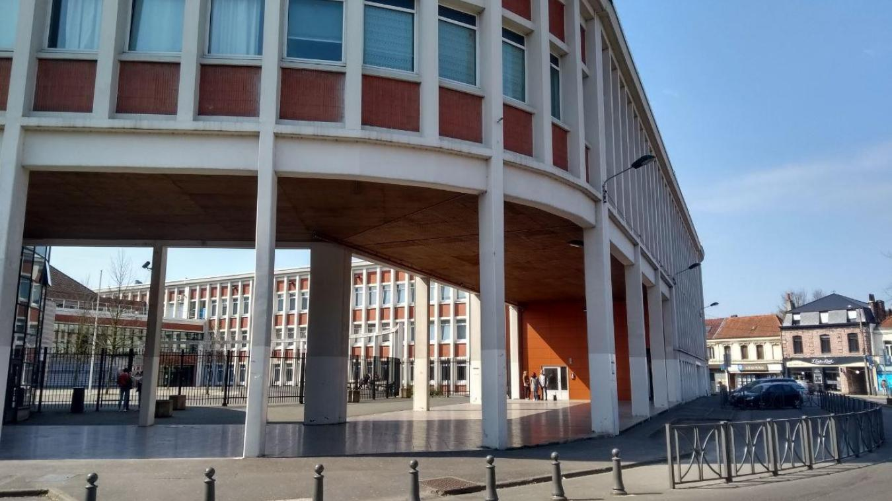

🏫 Université Polytechnique de Valenciennes
- 🎓 BUT GEII - Spécialisation AII
- 📅 2022 - Aujourd'hui
- ⚡ Automatisme et informatique industrielle
- 🤖 Programmation et Robotique

📚 Lycée Carnot - Bruay-la-Buissière
- 🎓 Bac STI2D - Option ITEC
- 📅 2018 - 2022
- 🛠 Innovation technologique et éco-conception
- 💡 Étude des systèmes et produits techniques